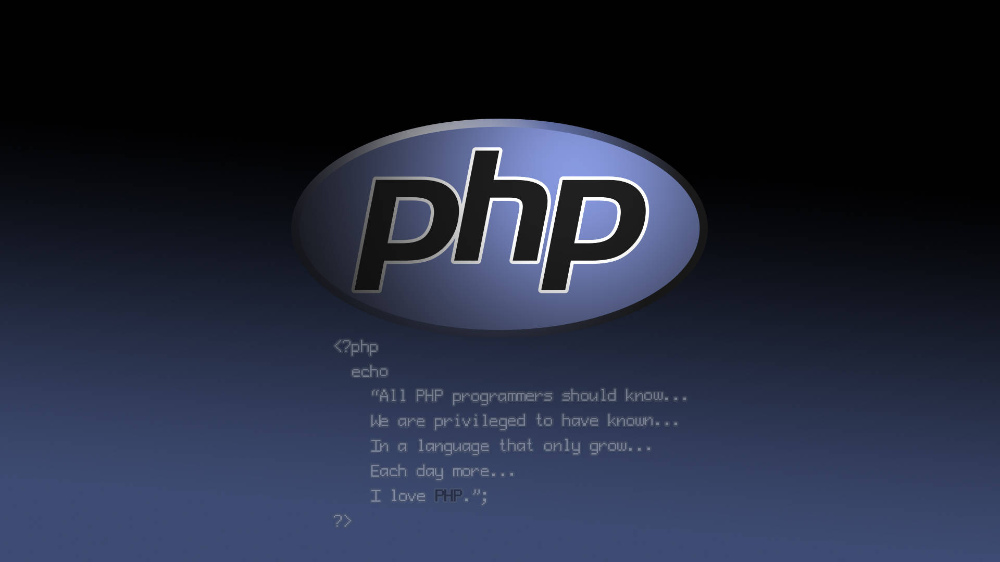

A guide on hosting a PHP website using XAMPP on a Windows server and making it accessible on the www

1. Install XAMPP on Windows Server:
- Download the XAMPP installer from https://www.apachefriends.org/index.html.
- Run the installer and follow the on-screen instructions.
- Choose the components you need (Apache, MySQL, PHP).
- Install XAMPP in a directory with write permissions (e.g., C:\xampp).
2. Start XAMPP Services:
- Open the XAMPP Control Panel.
- Start the Apache and MySQL services.
3. Place Website Files:
- Copy your website files into the
htdocsdirectory within your XAMPP installation (e.g., C:\xampp\htdocs).
4. Configure Virtual Host (Optional):
-
If you want to use a domain name instead of the server's IP address:
- Open the
httpd-vhosts.conffile in a text editor (usually found in C:\xampp\apache\conf\extra). - Add a virtual host entry like this:
<VirtualHost *:80> DocumentRoot "C:/xampp/htdocs/your-website-folder" ServerName your-domain-name.com </VirtualHost> - Open the
5. Port Forwarding (Essential for External Access):
- Access your router's configuration panel.
- Find port forwarding settings.
- Create a rule to forward port 80 (HTTP) to the server's internal IP address.
6. Test Website Locally:
- Open a web browser on the server or a local network computer.
- Access your website using either
http://localhostorhttp://server-ip-address.
7. Access Website from Anywhere (www):
- Use your domain name (if configured) or the server's public IP address to access the website from any device connected to the internet.